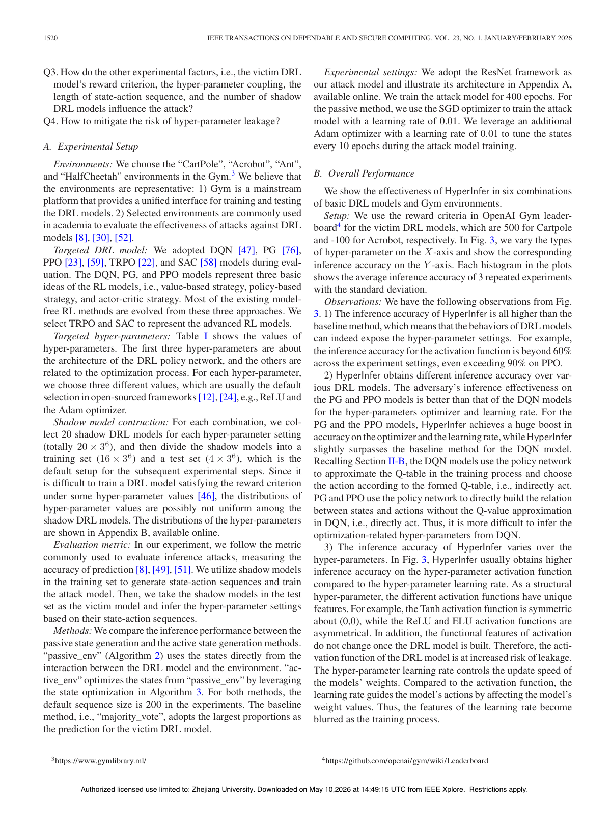

Revealing the Risk of Hyper-parameter Leakage in Deep Reinforcement Learning Models
IEEE Transactions on Dependable and Secure Computing (TDSC), 2025

Abstract
—Deep reinforcement learning (DRL) has been imple- mented in various critical applications, including smart grids, traf- fic management systems, and autonomous vehicles. To safeguard intellectual property and mitigate security vulnerabilities, access to DRL models is typically restricted to a closed-box format. This means that specific details, such as the structure of the policy net- work and optimization processes, are not openly available to users. It is crucial to determine if hyper-parameters can be inferred from observable states and actions within these models, presenting two primary challenges: 1) limited data available from the closed-box model and 2) intertwined effects of hyper-parameters on the model behavior . Since DRL models exhibit varying behaviors in identi- cal tasks depending on their hyper-parameter configurations, we introduce a novel hyper-parameter inference attack against DRL, named HyperInfer, which allows adversaries to deduce the settings of a closed-box DRL model. In order to fully assess the risk of model hyper-parameter leakage, we design two novel state generation methods that provoke divergent responses from DRL models. We also develop an inference framework to elucidate the relationship between model behavior and hyper-parameter settings. Through comprehensive experiments involving multiple DRL models and environments, we demonstrate that model behaviors can indeed re- veal hyper-parameter settings, with inference accuracy surpassing 90% in scenarios such as PPO with CartPole. We also discuss key Received 30 April 2024; revised 29 July 2025; accepted 2 September 2025. Date of publication 6 October 2025; date of current version 14 January 2026. This work was supported in part by the National Key Research and Development Program of China under Grant 2022YFB3102100, in part by the National Natural Science Foundation of China under Grant 62293511, Grant 62402379, Grant 62402431, Grant 62441618, Grant 62172243, and Grant 72571007. The work of Min Chen was supported in part by the CiCS project of the Gravitation research program and in part by the Dutch Research Council (NWO) under Grant 024.006.037. The work of Zhikun Zhang was.
Resources
Citation
@inproceedings{DZCSJCCBZ25,
author = {Linkang Du and Zhikun Zhang and Min Chen and Mingyang Sun and Shouling Ji and Peng Cheng and Jiming Chen and Michael Backes and Yang Zhang},
title = {{Revealing the Risk of Hyper-parameter Leakage in Deep Reinforcement Learning Models}},
booktitle = {{Transactions on Dependable and Secure Computing}},
publisher = {IEEE},
year = {2025},
}